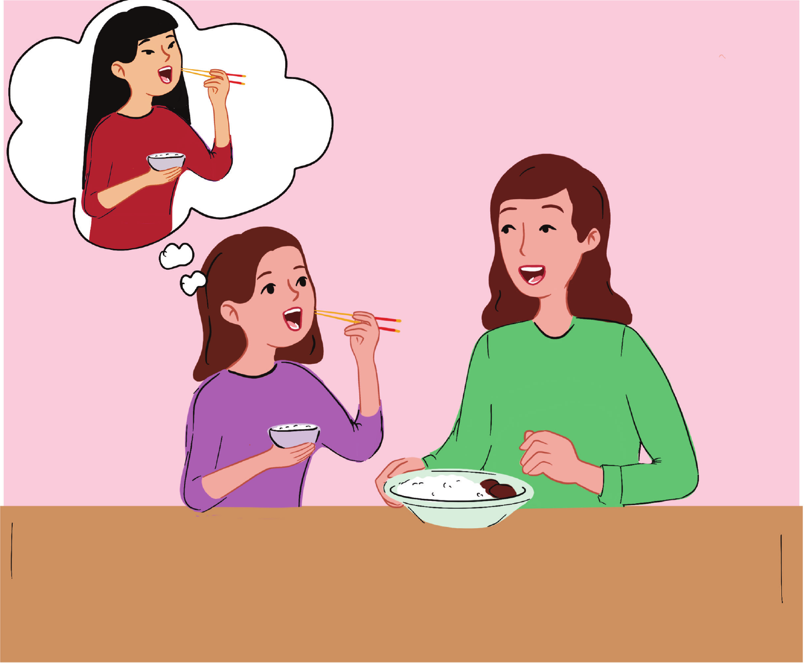

Mirëkuptimi, solidariteti, empatia dhe respekti ndaj të tjerëve
Respektojmë diversitetin kulturor
Situata 1.
Motra ime e madhe ka tre vjet që jeton në Amerikë për studime dhe punë. Ajo ka miq nga vende të ndryshme. Në konvikt rri me një vajzë nga Kina, një nga Turqia dhe një nga Irani.
Një ditë, gjatë një bisede telefonike, na tregoi për zakonet e tyre. Më shumë na bëri përshtypje se si në kulturën kineze orizi hahet me shkopinj dhe jo me pirun.
Kur vajza kineze e vizitoi motrën në Shqipëri, ne e pritëm me shumë gëzim. Prindërit përgatitën oriz sipas recetës kineze dhe për herë të parë ne hëngrëm me shkopinj.
Motra ime i tregoi shoqes për dasmat shqiptare, vallet tona dhe ushqimet tradicionale. Asaj i bëri shumë përshtypje se sa bukur vallëzojmë dhe sa të bashkuar jemi në festa.
